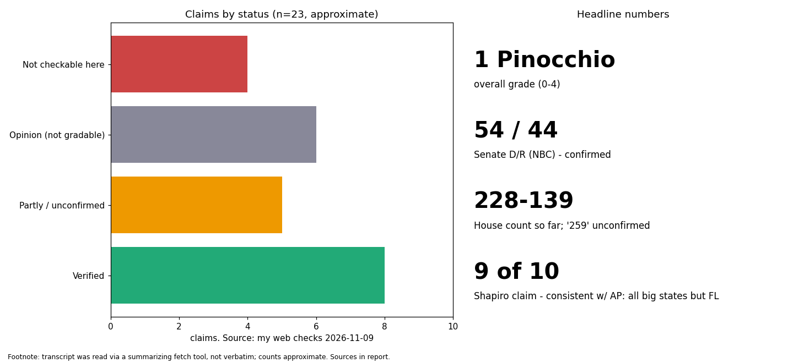

Mostly accurate: 1 Pinocchio, with several guest figures unverified
Overall grade: 1 Pinocchio. Every host-stated and independently checkable fact I could reach held up; the weak points are guest statistics I could not source.
- Confirmed: Democrats 54 Senate seats vs 44 R, Alaska and Mississippi open (NBC tracker via search); Donalds won Florida governor (50.1 to 48.7), described as first Black governor; Trump named Stephen Miller chief of staff, replacing Wiles (White House release); Shapiro won reelection.
- Consistent: Shapiro's "nine of ten biggest states" and 75% of population: AP says Democrats will hold the dozen most populous states except Florida; Newsweek puts it near three-quarters, contingent on Kansas and Alaska.
- Unconfirmed: "up to 259" House seats (reports show 228-139 with races pending; I found no 259 source); Adam Hamilton as Kansas senator-elect and his 60,000 Kansans / 20,000 children figures; Shapiro's "$2 billion" Trump gain; Short's 31-32% approval; Sanders' 66% poll; exit poll "nearly six in ten" on immigration.
- Misleading risk: House total is an estimate ("could win up to"), not a result. Guest claims are opinion or advocacy and unchallenged on air.
- Limits: the transcript came through a summarizing fetch, not verbatim, so quote wording was not verified; I did not query primary data (Census, CMS, USDA, FEC), only news and White House releases via search.

Sources
- https://www.nbcnews.com/meet-the-press/transcripts/meet-press-november-8-2026-rcna608110
- https://www.wdbo.com/news/trending/election-2026-democrats-capture-both-houses-congress/5ILOWTVABVDPZFYP7VBBCX4EWE/
- https://www.wdbj7.com/2026/11/04/democrats-press-win-majority-governors-offices-midterms-after-power-struggles-with-trump/
- https://www.wptv.com/news/political/elections-local/republican-byron-donalds-wins-election-for-governor-in-florida
- https://www.whitehouse.gov/releases/2026/11/president-trump-names-stephen-miller-as-33rd-white-house-chief-of-staff/